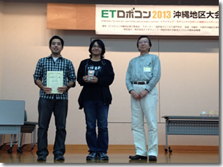
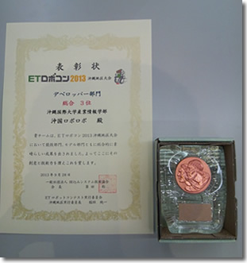

ETロボコン沖縄地区大会において沖国ロボロボチームが3位入賞
9月29日、沖縄産業支援センターで開催された「ETロボコン2013沖縄地区大会」デベロッパー部門において沖国ロボロボチームが3位入賞しました。
ETロボコンとは、若年層や初級組込みソフトウェア・エンジニア向けに、モノづくりの楽しさを経験する機会を提供し、組込み分野への興味を高めることを目的に行われているもので、特にデベロッパー部門は、学習入門者を対象とし、自律型ロボットで指定されたコースを走行するシステムを開発します。
沖国大ロボロボチームは、産業情報学科の学生たちで構成されており、今回の沖縄地区大会では、13チーム出場中3位と健闘しましたが、2位以上が全国大会派遣ということで、惜しくも全国大会出場を逃しました。しかし、学生たちは「次回こそは全国大会に出場したい」と意気込んでおり、今後の活躍が期待ができます。

